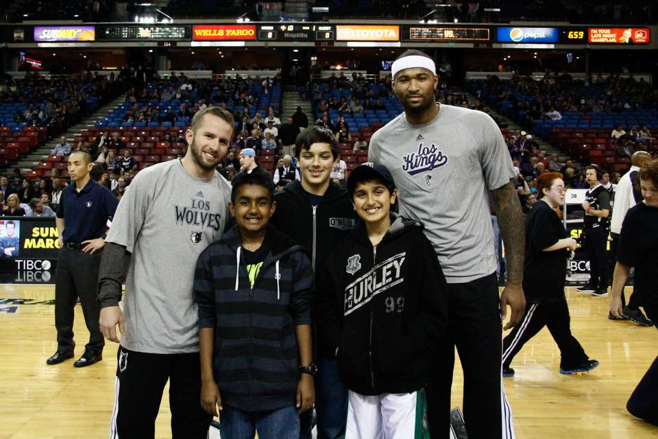

Sacramento lights the beam after the Kings win Game 1 against the Golden State Warriors on 15 April. JOSÉ LUIS VILLEGAS/AP PHOTO
That team is the Sacramento Kings, a team of which I am proudly a die-hard fan, and have been for nearly two decades.
Unfortunately, as every Kings fan knows, this series did not go as expected. The Kings were up 3-2 in the series heading into Game 6 in L.A., poised to take down the Lakers on their own home court. Then came the twist: The Lakers were given a jaw-dropping twenty-seven free throws in the fourth quarter to ensure that their hopes were kept alive despite a valiant effort by the Kings, and head referee Tim Donaghy later admitted that the referees in that game were paid off to keep the Lakers alive in the series. The Kings would lose Game 7, and the hopes of Sacramento fans were dashed. It was the most high-profile case of game fixing in recent sports memory.
In the years following that moral beatdown, the Kings struggled to redeem themselves. Core pieces of their roster aged out, got traded, and left in free agency. In 2006 — when I was five years old — they made it to the playoffs again, only to suffer a first-round loss to the San Antonio Spurs. That was the last time Sacramento would see their team in the playoffs for seventeen more years.
Kings fans are some of the most diehard fans in the country, despite the seventeen years of incompetence that followed. Even as casual Northern Californian basketball fans switched their Kings jerseys out for Warriors jerseys once Stephen Curry emerged as a superstar, Kings fans continued to support the team, go to games, and make noise. Sacramento never gave me a reason to switch to another team, even when my father, a native of Detroit, tried to make me a Pistons fan. I saw the love, devotion, underdog mentality, and camaraderie that Sacramento had around their only professional sports team; and I was immediately drawn to it. As long as I can remember watching basketball, I have been a Kings fan.
I have seen so many players play their hearts out for Sacramento over the last decade and a half. Nearly every player who has played here for a few years fell in love with the city and the fans.
Kings fans have never taken the team for granted, and doubled down after narrowly avoiding losing Sacramento’s only professional sports team. I remember my first live game after the relocation saga; even in a losing effort against a mediocre team, Kings fans were incredibly loud and the stadium was packed, and I was right along there with them. Fun fact: The Kings hold the record for the loudest crowd in NBA history at an ear-splitting one hundred and twenty-six decibels — and this was at a time when the Kings were thoroughly mediocre, making this all the more impressive.
I have seen so many players play their hearts out for Sacramento over the last decade and a half. Nearly every player who has played here for a few years fell in love with the city and the fans. Names like John Salmons, Jason Thompson, Francisco Garcia, Tyreke Evans, DeMarcus Cousins, and Isaiah Thomas were on different Kings squads doomed to go nowhere, but delivered memorable performances at a time when Kings basketball was at its worst. I still remember the picture I got with DeMarcus Cousins, a dominant All-Star center stuck on a mediocre Kings team, when my family was selected before the game to meet some players.
The author (middle) with JJ Barea (left) and DeMarcus Cousins (right) in 2014. Photo courtesy of the author
The Kings this year were a team projected to be out of the playoffs entirely, with star players De’Aaron Fox and Domantas Sabonis coming off of down years with a lot to prove. And then, we started to win. A lot.
Not only that, but our team boasted the most prolific scoring offense in NBA history, making the team extremely fun to watch as we would rattle off quick 10-point runs like it was a normal thing to do. If the energy when we were a bad team was high, imagine what the crowds felt like at games this year. We were regularly the loudest crowd in the league when we played, and opposing teams described Sacramento as the hardest place to play in the league because of the fans. You couldn’t walk through the greater Sacramento area on any day without seeing several Kings jerseys. And, of course, to top it off, the massive purple beam lit into the sky after every win became a cultural phenomenon.
I root for the Kings because, as a Sacramentan, they show me the grit and determination that our city has.
Sacramento as a city felt electric. Coinciding with the recovery of small businesses following the COVID-19 pandemic, it felt like the city came alive all at once within the span of a few months. Friends of mine who never cared about basketball started asking me to explain what was happening. I watched every game I could, whether at bars, on my computer, or at Golden1 Center. I cheered with about twenty people in my local gym when Sabonis and Fox were selected as the first Kings All-Stars in nearly a decade, and the first pair from the team in two decades. Entering the playoffs as the third seed felt even more surreal – we were actually a really good team and made the league care about us. Hell, the watch party in the Golden1 Center, on a day where the game was being played in San Francisco, was still packed to the brim — and just as loud as a regular game. Fans reveled in that joint excitement even while watching the Kings on the giant screen in the middle. Every single person in the city felt united behind the team, our team.
Playing the Warriors in the first round is emblematic of the luck the Kings have had over the years; even in a season where we secure the third seed, our reward is facing the very team that has overshadowed us in our own area — its much more famous and star-studded players bulldozing all of their opponents for the last decade, won four titles, and just got healthy.

De’Aaron Fox attempts a shot over Kevon Looney. JOSÉ LUIS VILLEGAS/AP PHOTO
We played the Warriors harder than any team has during their dynasty since the Cavaliers with LeBron James. We made the defending champions sweat and took them to seven games in the series. De’Aaron Fox proved why he earned Clutch Player of the Year this year and, with it, a place among the top point guards in the league. We may have lost — narrowly — but our core of young players will return next year with more cohesion and an offseason to tinker with the rest of the roster. We finally have a competent front office, with our team winning both the Executive of the Year and Coach of the Year awards this year.
Yet, despite the silver linings, the cloud is still there, and a fantastic season has come to an end. There’s a strange sense of emptiness — one I know will be filled soon when the NBA offseason starts and fans excitedly talk about moves that could be made — but it exists all the same. Part of me feels like we are doomed to experience a collapse regardless of the circumstances, because we are the Kings; but this team does feel different. Regardless of what happens, this season will go down as the most memorable of my lifetime, at least until we win the championship one day.
The author and a friend at a recent Kings game against the Portland Trail Blazers. Photo courtesy of the author